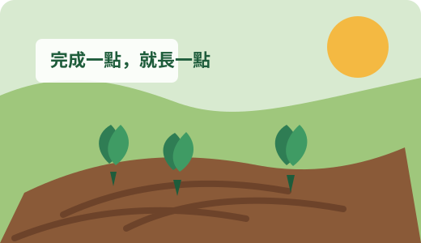

今日
0/0
本週
0
安全
A

作物
0%
今日農務
準備菜園中...
按播放，App 會用語音說明。
工具
次數
慢慢做
Evidence Tasks
依實證安排的今日任務
Harvest
我的收成
圖鑑
完成任務會讓菜園成長；沒有完成不會枯萎、不扣分，也不排名。
Records
健康紀錄
試辦資料
匯出資料可交給社區據點或研究人員彙整；檔案只包含此裝置上的紀錄。
Caregiver
照護者摘要
照護者提醒文字
目前沒有需要通知的事件。
Settings
我的設定
社區長者名冊
目前尚未建立長者資料。